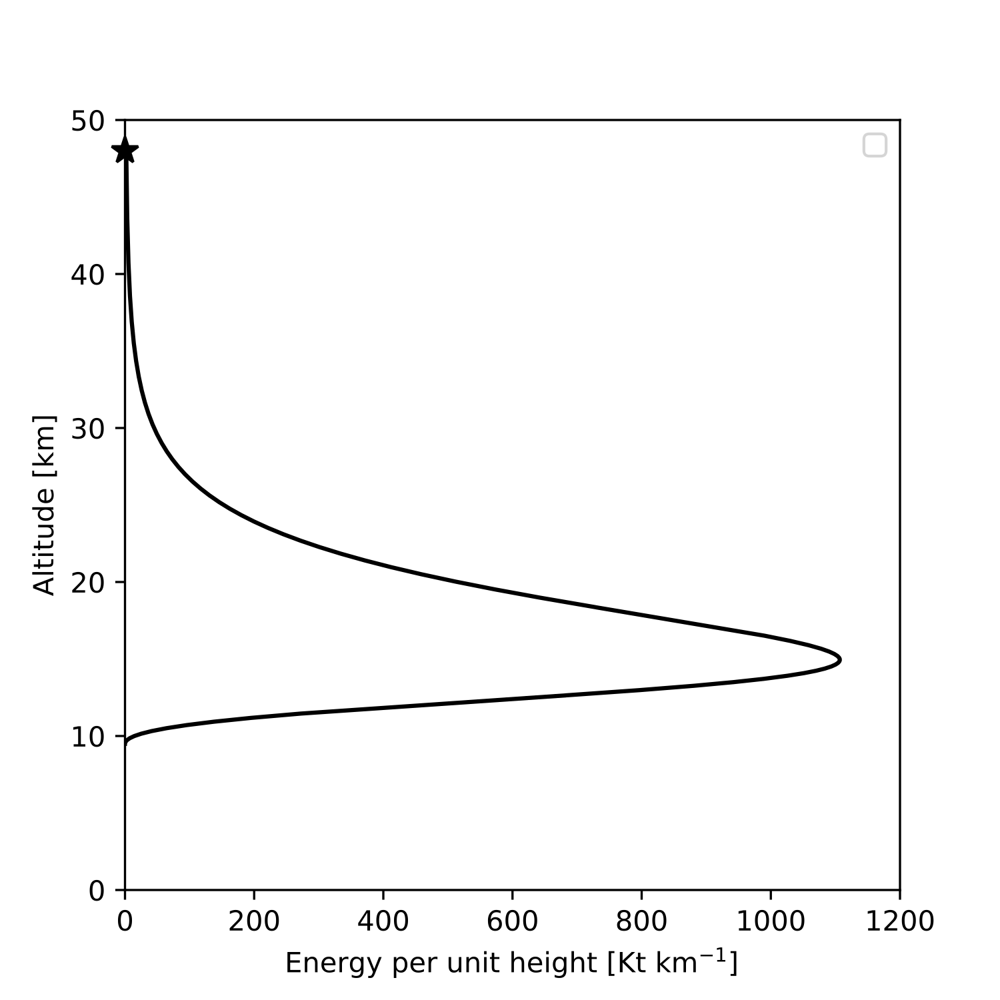

Project 2: Armageddon - Atmospheric entry and disruption of asteroids¶
Synopsis:¶
Asteroids entering Earth’s atmosphere are subject to extreme drag forces that decelerate, heat and disrupt the space rocks. The fate of an asteroid is a complex function of its initial mass, speed, trajectory angle and internal strength.
Asteroids 10-100 m in diameter can penetrate deep into Earth’s atmosphere and disrupt catastrophically, generating an atmospheric disturbance (airburst) that can cause damage on the ground. Such an event occurred over the city of Chelyabinsk in Russia, in 2013, releasing energy equivalent to about 520 kilotons of TNT (1 kt TNT is equivalent to \(4.184 \times 10^{12}\) J), and injuring thousands of people (Popova et al., 2013; Brown et al., 2013). An even larger event occurred over Tunguska, an unpopulated area in Siberia, in 1908.
The purpose of this exercise is to develop a fast numerical simulator to predict the fate of asteroids entering Earth’s atmosphere for the purposes of hazard assessment.
Problem definition¶
Equations¶
The dynamics of an asteroid in Earth’s atmosphere is governed by a coupled set of ordinary differential equations:
In these equations, \(v\), \(m\), and \(A\) are the asteroid speed (along trajectory), mass and cross-sectional area, respectively. \(\theta\) is the meteoroid trajectory angle to the horizontal (in radians), \(x\) is the downrange distance of the meteoroid from its entry position, \(z\) is the altitude and \(t\) is time; \(C_D\) is the drag coefficient, \(\rho_a\) is the atmospheric density (a function of altitude ), \(C_H\) is an ablation efficiency coefficient, \(Q\) is the specific heat of ablation; \(C_L\) is a lift coefficient; and \(R_P\) is the planetary radius. All terms use MKS units.
It is common to assume (for simplicity) that, prior to break-up, the radius (and cross-sectional area) of the asteroid remains constant; that is, any mass-loss by ablation does not change the cross-sectional area of the asteroid. We will further assume a spherical asteroid.
A commonly used criterion for the break-up of an asteroid in the atmosphere is when the ram pressure of the air interacting with the asteroid \(\rho_a v^2\) first exceeds the strength of the asteroid \(Y\).
Should break-up occur, the asteroid deforms and spreads laterally as it continues its passage through the atmosphere. As a result its radius and cross-sectional area increase, but the asteroid density is assumed to remain constant (often referred to as ‘pancaking’). It is conventional to define the cross-sectional area of the expanding cloud of fragments as \(A = \pi r^2\) (i.e., assuming a circular cross-section), for use in the above equations.
Several models for the spreading rate \(\frac{dr}{dt}\) have been proposed. In the simplest model, the fragmented asteroid’s spreading rate is related to its along trajectory speed (Hills and Goda, 1993):
Where \(r\) is the asteroid radius, \(\rho_m\) is the asteroid density and \(\alpha\) is a spreading coefficient, often taken to be 0.3.
Note that fragmentation and spreading ceases (\(\frac{dr}{dt} = 0\)) when the ram pressure drops back below the strength of the asteroid \(\rho_a v^2 < Y\).
The figure below shows a typical solution to the above set of equations for an impact airburst scenario. The kinetic energy loss per unit height, which is a good approximation for the energy transferred to the atmosphere as heat (and is often referred to as the energy deposited per km altitude), is shown as a function of altitude.
In this scenario the asteroid experiences breakup at approximately 48-km altitude (denoted by the star), before spreading and decelerating rapidly until an altitude of approximately 15 km at which point the energy loss per unit height is maximum. This point is often considered to be the burst altitude. The total kinetic energy lost by the asteroid at this point is a good estimate of the airburst energy (i.e., the total energy deposited into the atmosphere) for hazard analysis.
Impact scenarios with a burst altitude well (>5 km) above the surface can be considered to be airburst events and are unlikely to form a sizable crater on the ground. In such cases, even if a substantial fraction of the original asteroid survives to the ground it will be decelerated to a very small fraction of its initial speed.
Impact scenarios with a burst altitude below the surface (i.e., peak energy deposition per unit height is not reached before the asteroid strikes the ground) will form a sizable impact crater on the ground and can be considered as a cratering event (although a sizable proportion of the original kinetic energy of the asteroid may be transferred to the air).
Between these scenarios is a complex regime where a low altitude airburst combined with a substantial crater-forming event is likely. This regime is not well understood.
Function API¶
Python asteroid airburst calculator
-
armageddon.F(x, a)¶ The given probability function for velocity at infinity
- Parameters
x (float) –
to get probability of (actually gets P(<x)) (velocity) –
a (int) –
11 km / s (constant,) –
- Returns
- Return type
Probability of velocity being less than x
-
class
armageddon.Planet(atmos_func='exponential', atmos_filename=None, Cd=1.0, Ch=0.1, Q=10000000.0, Cl=0.001, alpha=0.3, Rp=6371000.0, g=9.81, H=8000.0, rho0=1.2)¶ The class called Planet is initialised with constants appropriate for the given target planet, including the atmospheric density profile and other constants
Set up the initial parameters and constants for the target planet
- Parameters
atmos_func (string, optional) – Function which computes atmospheric density, rho, at altitude, z. Default is the exponential function
rho = rho0 exp(-z/H). Options areexponential,tabular,constantandmarsatmos_filename (string, optional) – If
atmos_func='tabular', then set the filename of the table to be read in here.Cd (float, optional) – The drag coefficient
Ch (float, optional) – The heat transfer coefficient
Q (float, optional) – The heat of ablation (J/kg)
Cl (float, optional) – Lift coefficient
alpha (float, optional) – Dispersion coefficient
Rp (float, optional) – Planet radius (m)
rho0 (float, optional) – Air density at zero altitude (kg/m^3)
g (float, optional) – Surface gravity (m/s^2)
H (float, optional) – Atmospheric scale height (m)
- Returns
- Return type
None
-
analyse_outcome(result)¶ Inspect a prefound solution to calculate the impact and airburst stats
- Parameters
result (DataFrame) – pandas DataFrame with velocity, mass, angle, altitude, horizontal distance, radius and dedz as a function of time
- Returns
outcome – dictionary with details of airburst and/or cratering event. For an airburst, this will contain the following keys:
burst_peak_dedz,burst_altitude,burst_total_ke_lost.For a cratering event, this will contain the following keys:
impact_time,impact_mass,impact_speed.All events should also contain an entry with the key
outcome, which should contain one of the following strings:Airburst,CrateringorAirburst and cratering- Return type
Dict
-
calculate_energy(result)¶ Function to calculate the kinetic energy lost per unit altitude in kilotons TNT per km, for a given solution.
- Parameters
result (DataFrame) – A pandas DataFrame with columns for the velocity, mass, angle, altitude, horizontal distance and radius as a function of time
- Returns
Result – Returns the DataFrame with additional column
dedzwhich is the kinetic energy lost per unit altitude- Return type
DataFrame
-
find_density_tabular(alt, atmos)¶ Function to represent a tabular representation of earth’s atmosphere
- Parameters
alt (float) – the altitude at which to find atmosphere density
atmos (DataFrame) – Contains density altitude and height values which can be used in interpolation
- Returns
density – The density of atmosphere at this altitude on earth
- Return type
float
-
find_parameter(filename='../data/ChelyabinskEnergyAltitude.csv', velocity=19200.0, angle=18.3, density=3300, radians=False)¶ determine asteroid parameters (e.g., strength and radius) that best fit an observed energy deposition curve
- Parameters
filename (string) – the csv file path for the observed energy deposition curve
velocity (float) – The entery speed of the asteroid in meters/second
density (float) – The density of the asteroid in kg/m^3
angle (float) – The initial trajectory angle of the asteroid to the horizontal By default, input is in degrees. If ‘radians’ is set to True, the input should be in radians
radians (logical, optional) – Whether angles should be given in degrees or radians. Default=False Angles returned in the DataFrame will have the same units as the input
- Returns
estimated_radius (float) – the estimated radius to best fit the observed value
estimated_strength (float) – the estimated strength to best fit the observed value
-
impact(radius, velocity, density, strength, angle, init_altitude=100000, dt=0.05, radians=False, ensemble=False)¶ Solve the system of differential equations for a given impact event. Also calculates the kinetic energy lost per unit altitude and analyses the result to determine the outcome of the impact.
- Parameters
radius (float) – The radius of the asteroid in meters
velocity (float) – The entery speed of the asteroid in meters/second
density (float) – The density of the asteroid in kg/m^3
strength (float) – The strength of the asteroid (i.e., the ram pressure above which fragmentation and spreading occurs) in N/m^2 (Pa)
angle (float) – The initial trajectory angle of the asteroid to the horizontal By default, input is in degrees. If ‘radians’ is set to True, the input should be in radians
init_altitude (float, optional) – Initial altitude in m
dt (float, optional) – The output timestep, in s
radians (logical, optional) – Whether angles should be given in degrees or radians. Default=False Angles returned in the DataFrame will have the same units as the input
- Returns
Result (DataFrame) – A pandas DataFrame containing the solution to the system. Includes the following columns:
velocity,mass,angle,altitude,distance,radius,time,dedzoutcome (Dict) – dictionary with details of airburst and/or cratering event. For an airburst, this will contain the following keys:
burst_peak_dedz,burst_altitude,burst_total_ke_lost.For a cratering event, this will contain the following keys:
impact_time,impact_mass,impact_speed.All events should also contain an entry with the key
outcome, which should contain one of the following strings:Airburst,CrateringorAirburst and cratering
-
mars_atmo(z)¶ Function to represent the atmosphere of mars
- Parameters
z (float) – the altitude at which to find atmosphere density
- Returns
float
- Return type
density of marsian atmosphere at this altitude
-
solve_atmospheric_entry(radius, velocity, density, strength, angle, init_altitude=100000, dt=0.05, radians=False, ensemble=False)¶ Solve the system of differential equations for a given impact scenario
- Parameters
radius (float) – The radius of the asteroid in meters
velocity (float) – The entery speed of the asteroid in meters/second
density (float) – The density of the asteroid in kg/m^3
strength (float) – The strength of the asteroid (i.e., the ram pressure above which fragmentation and spreading occurs) in N/m^2 (Pa)
angle (float) – The initial trajectory angle of the asteroid to the horizontal By default, input is in degrees. If ‘radians’ is set to True, the input should be in radians
init_altitude (float, optional) – Initial altitude in m
dt (float, optional) – The output timestep, in s
radians (logical, optional) – Whether angles should be given in degrees or radians. Default=False Angles returned in the DataFrame will have the same units as the input
- Returns
Result – A pandas DataFrame containing the solution to the system. Includes the following columns:
velocity,mass,angle,altitude,distance,radius,time- Return type
DataFrame
-
armageddon.delayed¶ Wraps a function or object to produce a
Delayed.Delayedobjects act as proxies for the object they wrap, but all operations on them are done lazily by building up a dask graph internally.- Parameters
obj (object) – The function or object to wrap
name (string or hashable, optional) – The key to use in the underlying graph for the wrapped object. Defaults to hashing content. Note that this only affects the name of the object wrapped by this call to delayed, and not the output of delayed function calls - for that use
dask_key_name=as described below.pure (bool, optional) – Indicates whether calling the resulting
Delayedobject is a pure operation. If True, arguments to the call are hashed to produce deterministic keys. If not provided, the default is to check the globaldelayed_puresetting, and fallback toFalseif unset.nout (int, optional) – The number of outputs returned from calling the resulting
Delayedobject. If provided, theDelayedoutput of the call can be iterated intonoutobjects, allowing for unpacking of results. By default iteration overDelayedobjects will error. Note, thatnout=1expectsobj, to return a tuple of length 1, and consequently fornout=0,objshould return an empty tuple.traverse (bool, optional) – By default dask traverses builtin python collections looking for dask objects passed to
delayed. For large collections this can be expensive. Ifobjdoesn’t contain any dask objects, settraverse=Falseto avoid doing this traversal.
Examples
Apply to functions to delay execution:
>>> def inc(x): ... return x + 1
>>> inc(10) 11
>>> x = delayed(inc, pure=True)(10) >>> type(x) == Delayed True >>> x.compute() 11
Can be used as a decorator:
>>> @delayed(pure=True) ... def add(a, b): ... return a + b >>> add(1, 2).compute() 3
delayedalso accepts an optional keywordpure. If False, then subsequent calls will always produce a differentDelayed. This is useful for non-pure functions (such astimeorrandom).>>> from random import random >>> out1 = delayed(random, pure=False)() >>> out2 = delayed(random, pure=False)() >>> out1.key == out2.key False
If you know a function is pure (output only depends on the input, with no global state), then you can set
pure=True. This will attempt to apply a consistent name to the output, but will fallback on the same behavior ofpure=Falseif this fails.>>> @delayed(pure=True) ... def add(a, b): ... return a + b >>> out1 = add(1, 2) >>> out2 = add(1, 2) >>> out1.key == out2.key True
Instead of setting
pureas a property of the callable, you can also set it contextually using thedelayed_puresetting. Note that this influences the call and not the creation of the callable:>>> import dask >>> @delayed ... def mul(a, b): ... return a * b >>> with dask.config.set(delayed_pure=True): ... print(mul(1, 2).key == mul(1, 2).key) True >>> with dask.config.set(delayed_pure=False): ... print(mul(1, 2).key == mul(1, 2).key) False
The key name of the result of calling a delayed object is determined by hashing the arguments by default. To explicitly set the name, you can use the
dask_key_namekeyword when calling the function:>>> add(1, 2) # doctest: +SKIP Delayed('add-3dce7c56edd1ac2614add714086e950f') >>> add(1, 2, dask_key_name='three') Delayed('three')
Note that objects with the same key name are assumed to have the same result. If you set the names explicitly you should make sure your key names are different for different results.
>>> add(1, 2, dask_key_name='three') # doctest: +SKIP >>> add(2, 1, dask_key_name='three') # doctest: +SKIP >>> add(2, 2, dask_key_name='four') # doctest: +SKIP
delayedcan also be applied to objects to make operations on them lazy:>>> a = delayed([1, 2, 3]) >>> isinstance(a, Delayed) True >>> a.compute() [1, 2, 3]
The key name of a delayed object is hashed by default if
pure=Trueor is generated randomly ifpure=False(default). To explicitly set the name, you can use thenamekeyword:>>> a = delayed([1, 2, 3], name='mylist') >>> a Delayed('mylist')
Delayed results act as a proxy to the underlying object. Many operators are supported:
>>> (a + [1, 2]).compute() [1, 2, 3, 1, 2] >>> a[1].compute() 2
Method and attribute access also works:
>>> a.count(2).compute() 1
Note that if a method doesn’t exist, no error will be thrown until runtime:
>>> res = a.not_a_real_method() >>> res.compute() # doctest: +SKIP AttributeError("'list' object has no attribute 'not_a_real_method'")
“Magic” methods (e.g. operators and attribute access) are assumed to be pure, meaning that subsequent calls must return the same results. This behavior is not overrideable through the
delayedcall, but can be modified using other ways as described below.To invoke an impure attribute or operator, you’d need to use it in a delayed function with
pure=False:>>> class Incrementer(object): ... def __init__(self): ... self._n = 0 ... @property ... def n(self): ... self._n += 1 ... return self._n ... >>> x = delayed(Incrementer()) >>> x.n.key == x.n.key True >>> get_n = delayed(lambda x: x.n, pure=False) >>> get_n(x).key == get_n(x).key False
In contrast, methods are assumed to be impure by default, meaning that subsequent calls may return different results. To assume purity, set pure=True. This allows sharing of any intermediate values.
>>> a.count(2, pure=True).key == a.count(2, pure=True).key True
As with function calls, method calls also respect the global
delayed_puresetting and support thedask_key_namekeyword:>>> a.count(2, dask_key_name="count_2") Delayed('count_2') >>> with dask.config.set(delayed_pure=True): ... print(a.count(2).key == a.count(2).key) True
-
armageddon.erfinv(y)¶ Inverse of the error function erf.
Computes the inverse of the error function.
In complex domain, there is no unique complex number w satisfying erf(w)=z. This indicates a true inverse function would have multi-value. When the domain restricts to the real, -1 < x < 1, there is a unique real number satisfying erf(erfinv(x)) = x.
- Parameters
y (ndarray) – Argument at which to evaluate. Domain: [-1, 1]
- Returns
erfinv – The inverse of erf of y, element-wise
- Return type
ndarray
Examples
evaluating a float number
>>> from scipy import special >>> special.erfinv(0.5) 0.4769362762044698
evaluating a ndarray
>>> from scipy import special >>> y = np.linspace(-1.0, 1.0, num=10) >>> special.erfinv(y) array([ -inf, -0.86312307, -0.5407314 , -0.30457019, -0.0987901 , 0.0987901 , 0.30457019, 0.5407314 , 0.86312307, inf])
-
armageddon.inverse_F(p, a)¶ Inverts the probability function to get velocity for each specific probability
- Parameters
p (float) –
to find x less than (probability) –
a (int) –
11 km / s (constant,) –
- Returns
- Return type
Velocity v such that P(<v) = p
-
armageddon.solve_ensemble(planet, fiducial_impact, variables, radians=False, rmin=8, rmax=12, samples=30)¶ Run asteroid simulation for a distribution of initial conditions and find the burst distribution
- Parameters
planet (object) – The Planet class instance on which to perform the ensemble calculation
fiducial_impact (dict) – Dictionary of the fiducial values of radius, angle, strength, velocity and density
variables (list) – List of strings of all impact parameters to be varied in the ensemble calculation
rmin (float, optional) – Minimum radius, in m, to use in the ensemble calculation, if radius is one of the parameters to be varied.
rmax (float, optional) – Maximum radius, in m, to use in the ensemble calculation, if radius is one of the parameters to be varied.
- Returns
ensemble – DataFrame with columns of any parameters that are varied and the airburst altitude
- Return type
DataFrame